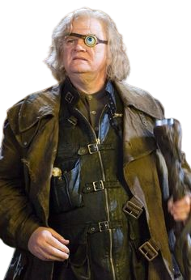

Profesores y Clases

Posiones

Defensa contra las Artes Oscuras

transformaciones
Hay clases obligatorias: Pociones, Transformaciones, Herbología, Encantamientos, Defensa contra las Artes Oscuras, Historia de la Magia y Astronomía. A los de primero también se les enseña Vuelo .
Clases